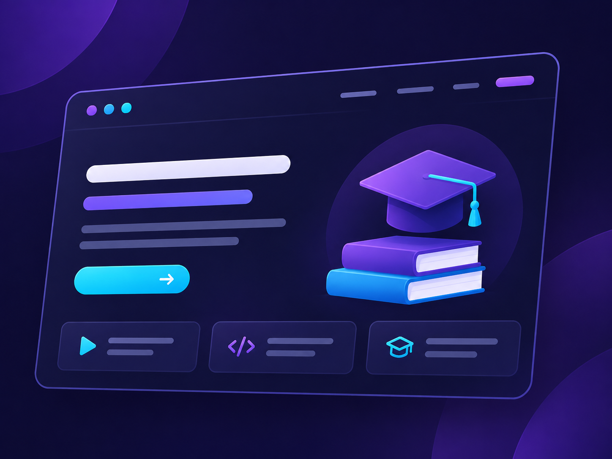
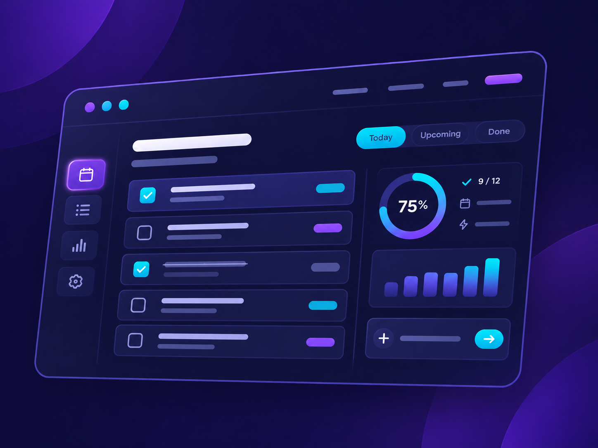
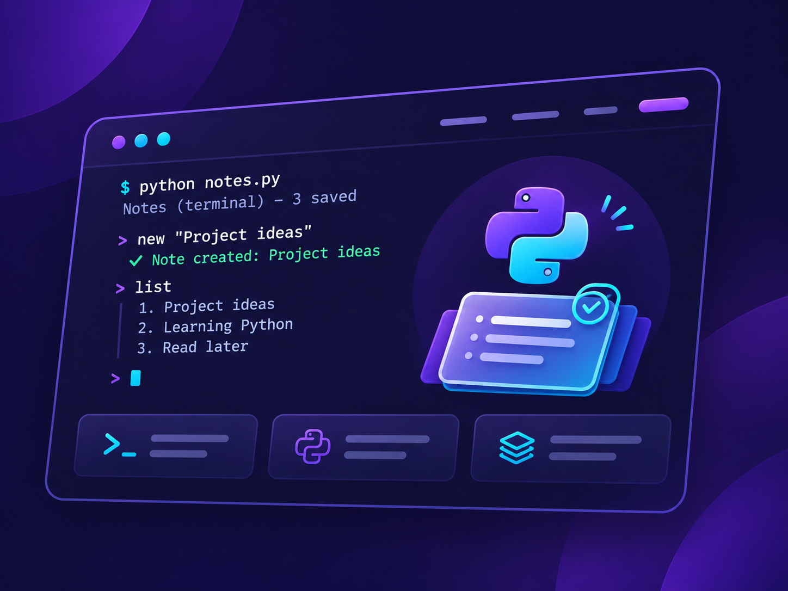

HTML5
Семантика, формы и доступная структура страниц.
Изучаю веб-разработку и Python. Учусь превращать идеи в понятные интерфейсы, писать аккуратный код и находить решения шаг за шагом.
Обо мне и направлении, в котором хочется развиваться.
Я в начале пути в программировании. Разбираюсь в HTML, CSS и JavaScript, осваиваю Python и учусь работать с Git. Новые темы закрепляю на небольших учебных задачах.
Мне интересны удобные интерфейсы, адаптивная вёрстка и автоматизация повседневных действий. Стараюсь понимать, как работает решение, и делать код понятным для других.
Моя цель — собрать портфолио самостоятельных работ, научиться уверенно решать практические задачи и подготовиться к первой стажировке.
Это пример текста для начинающего разработчика. Перед публикацией замените его своей историей обучения.
Пример направлений обучения. Без условных процентов: у каждого инструмента — конкретные темы для практики.
Семантика, формы и доступная структура страниц.
Flexbox, Grid, адаптивная вёрстка и анимации.
Основы языка, события и взаимодействие с DOM.
Функции, коллекции и небольшие скрипты.
Коммиты, ветки и история изменений проекта.
Три демонстрационные идеи учебных работ. Описания показывают возможный объём задач; готовые приложения и репозитории не подключены.

Адаптивная страница с программой обучения, блоком вопросов и навигацией по разделам.

Небольшое приложение для списка дел: добавление, отметка выполнения и фильтрация.

Консольная программа для создания, поиска и хранения коротких текстовых заметок.
Здесь можно оставить контакты для обсуждения учебных проектов, обратной связи и предложений о сотрудничестве.
Сейчас указаны демонстрационные данные. Замените их перед публикацией сайта.